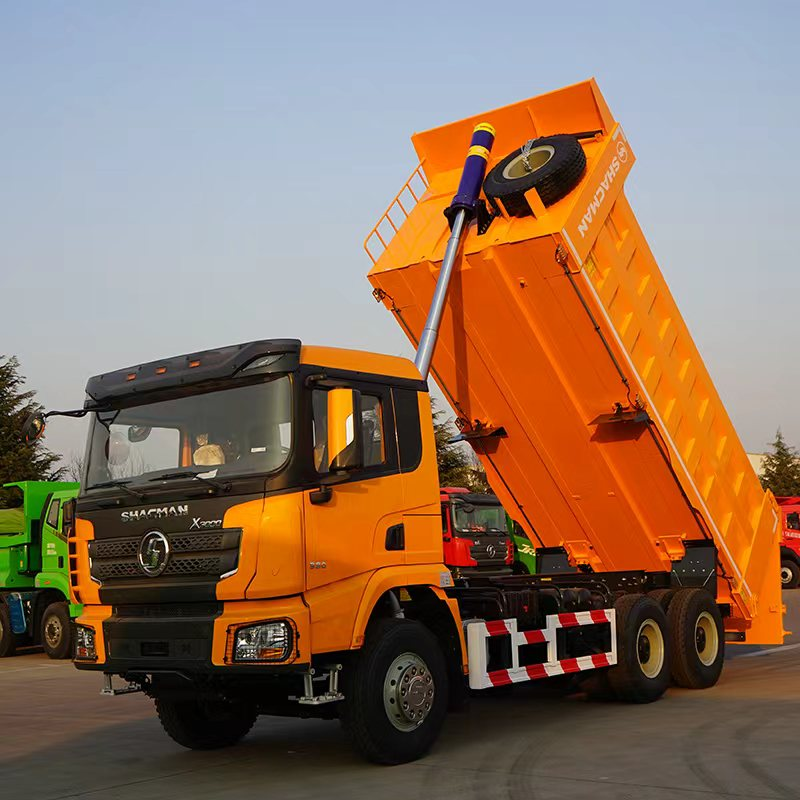
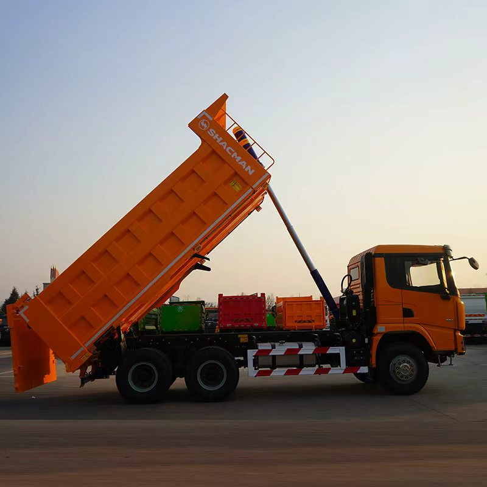

F3000 6x4 Dump Truck
A heavy-duty option commonly considered for construction and site haulage. Final engine, body and axle specification depends on the project.
View F3000 6x4 detailsSHACMAN dump trucks are available for construction, quarry, mining and infrastructure haulage. Choose the model and axle configuration only after confirming payload, road conditions, climate and destination-country requirements.
Get Configuration & PriceAsk on WhatsApp
A heavy-duty option commonly considered for construction and site haulage. Final engine, body and axle specification depends on the project.
View F3000 6x4 detailsConsider an 8x4 layout when the project requires a longer body or different axle-load distribution, subject to local regulations.
Review F3000 optionsThe supplied Central Asia vehicle has a rectangular reinforced body and front hydraulic lift. Engine, power, body dimensions and destination compliance must be confirmed separately.
Review X3000 optionsF3000 entries describe options to discuss; their exact configuration and vehicle photos will be confirmed with your proposal. The X3000 shown above is the customer-supplied Central Asia version, not evidence of another market specification.
Mine, quarry, construction site, public road percentage, gradients, altitude and ambient temperature.
Material density, target payload, body dimensions, floor and side thickness, tipping system and tailgate.
Emission standard, steering position, tire preference, registration requirements, port and shipping method.
Online specifications are configuration ranges, not a final offer. The sales contract and confirmed technical sheet control the delivered vehicle.
A SHACMAN tipper truck should be selected around material, route and legal weight limits. More axles or a larger body do not automatically mean a higher legal payload or lower operating cost.
| Decision | 6x4 layout | 8x4 layout |
|---|---|---|
| Access and manoeuvring | Evaluate where a shorter vehicle is useful. Confirm wheelbase, turning circle and site access. | Check total length, turning space and loading and unloading areas before selecting a longer body. |
| Load distribution | Calculate axle loads with the selected body and actual material. | Four axles change load distribution; local axle and gross-weight limits still control legal operation. |
| Body choice | Specify density, maximum rock size, loading equipment and wear conditions. Body volume alone is not a payload rating. | |
| Drivetrain | Select engine, transmission and final-drive ratio using gross weight, gradient, altitude and road-haul distance. | |
Report density and moisture, loading height and trips per day. A full body can exceed legal weight limits when the material is dense or wet.
Provide rock size, impact height and abrasion conditions. Confirm floor, sidewall and reinforcement requirements from the final body specification.
Give paved-road percentage, daily distance and steepest sustained gradient. Review tyres, braking equipment and gearing for the complete route.

A meaningful export quotation identifies the engine and emission standard, transmission, axles and ratio, tyres, cab, body dimensions, lifting equipment and agreed options. Freight and delivery terms must be stated separately or clearly included.
Send the destination, quantity and duty cycle below. We can review configuration requirements and prepare an offer for confirmation. Public photos and reference specifications are not a final contractual offer.
Tell us what you need to carry and where the truck will work. Required fields are marked *. This form prepares a WhatsApp message for you to review and send.
Prefer email? sales@shacmantruck-export.com
Route, altitude and reference-configuration questions.
Tajikistan buyer guideMaterial, maintenance and quotation inputs.
Ghana quarry guideUnderstand what belongs in a technical and commercial proposal.
Truck export buying guideSend the destination country, truck type, quantity, working conditions and preferred configuration. Price is confirmed after configuration and shipping requirements are reviewed.
Available engines, emission standards, transmissions, axles, tires, cab layouts and upper bodies depend on the model and destination-market requirements.
Confirm payload and working conditions, destination-country compliance, final technical specification, inspection scope, shipping method, delivery terms and written warranty terms.